A basic working knowledge of Dreamweaver, web standards (for example, XHTML and CSS), and PHP will be helpful.
Intermediate
Creating a Multiscreen Theme for Wordpress Using Dreamweaver CS5.5
This is a Tutorial which focuses on creating a custom Multiscreen theme using media queries and CSS Styles editing using Dreamweaver CS5.5.The theme will be optimized for a smart phone, tablet and desktop. We will also use the resolution management feature which is new to DW CS 5.5. If you are new to wordpress/Custom wordpress theming I advise that you go through the 4 part series on editing wordpress themes using Dreamweaver CS5 by Brian Wood.
http://www.adobe.com/devnet/dreamweaver/articles/dw_wordpress_pt1.html.
This tutorial is divided into the following sections:
So lets start by setting up Wordpress.This tutorial is based on Wordpress 3.1 so please download this version from the wordpress website.
Once you have downloaded the wordpress files
please install wordpress on your local server XAMPP (if you have Windows) or Mamp on Mac or could be any other set up which supports php and has mysql installed.If you are setting up wordpress for the 1st time please go through this tutorial,http://www.adobe.com/devnet/dreamweaver/articles/dw_wordpress_pt2.html. It has step by step instructions on how to install Wordpress in Dreamweaver.
Creating a child theme
One of the features in wordpress theme development is the concept of child themes.A child theme is a theme which has its own stylesheet however inherits the template files from a parent theme.
A child theme resides in its own directory in wp-content/themes.Create a new directory
by the
name multiscreen under wp-content/themes.
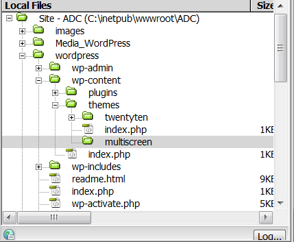
style.css is the one and only required file in a child theme. It provides the information header by which WordPress recognizes the child theme, and it replaces the style.css of the parent.As with any WordPress theme, the information header must be at the top of the file, the only difference being that in a child theme the Template: line is required, so that WordPress knows which theme is the parent of the child theme.
Here is an example information header of a child theme’s style.css:
/* Theme Name: Twenty Ten Child
Theme URI: http: //example.com/ Description:Child theme for the Twenty Ten theme Author: Your name here
Author URI: http: //example.com/about/
Template: twentyten
Version: 0.1.0 */
Create a css file in the multiscreen directory.
Paste the following code inside style.css and save it.
/*
Theme Name: Multiscreen
Description: Multiscreen Theme using CSS Media Queries.
Author: Your Name Here
Template: twentyten
*/
@import url("../twentyten/style.css");
#site-title a {
color: #009900;
}
The @import rule brings in the parent’s stylesheet.
The #site-title a rule defines a colour (green) for the site’s name, overriding the corresponding rule
Go to Dashboard › Themes and activate your new theme, the Multiscreen.
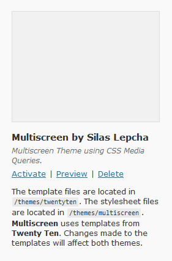
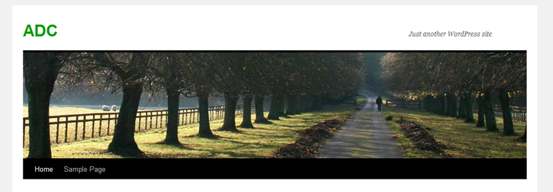
For more information on child themes go to http://codex.wordpress.org/Child_Themes.
A media query is a logical expression that is either true or false.A media query is true if the media type of the media query matches the media type of the device where the user agent is running and all expressions in the media query are true.A media query consists of a media type and zero or more expressions that check for the conditions of particular media features.If you look at the example below the media type is screen and the expression is the maximum or minimum screenwidth.We need only one version of the html file and the CSS file will switch whenever these expressions are met.
Syntax for specifying the media type and expression within the link tag.
<!-- Phone -->
<link href="phone.css" rel="stylesheet" type="text/css" media="only screen and (max-width:320px)" />
<!-- Tablet -->
<link href="tablet.css" rel="stylesheet" type="text/css" media="only screen and (min-width:321px) and (max-width:768px)" />
<!-- Desktop -->
<link href="desktop.css" rel="stylesheet" type="text/css" media="only screen and (min-width:769px)" />
The image below is from the Multiscreen Preview window in Dreamweaver, It shows the change in the layout and style as per the conditions specified in the media queries.
Whenever these conditions are met the browser will switch to the corresponding css file.
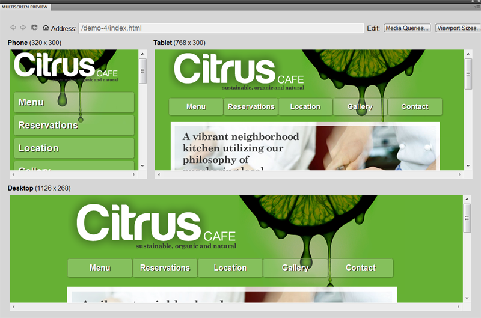
If you want to know more you can read "Using CSS media queries to target different screen resolutions" by David Powers.http://www.adobe.com/devnet/dreamweaver/articles/dw_html5_pt3.html.
Setting up Media Queries in multiscreen style.css
We will need to specify the media queries within our child theme multiscreen style.css.
Paste the following code after @import url("../twentyten/style.css"); and save style.css
@media screen and (max-width:320px)
{
#site-title a {
color: #009900;
}
}
@media screen and (min-width:321px) and (max-width:768px)
{
#site-title a {
color:#3CF;
}
}
@media screen and (min-width:769px)
{
#site-title a {
color: #F00;
}
}
If you have set up wordpress in Dreamweaver click on Multiscreen Preview. You can notice the media queries are working as per the conditions.
The site title color is different at different screenwidths.
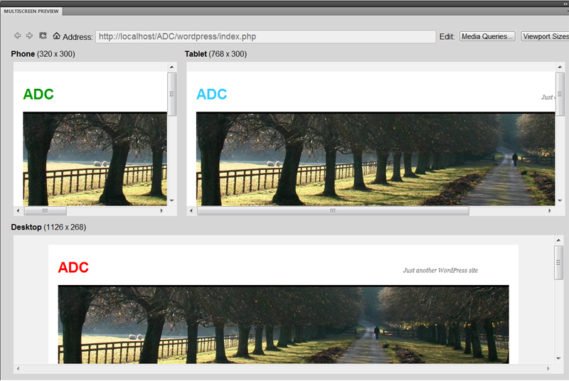
I have modified the phone media query css for a phone width, paste the following css into style.css
@media screen and (max-width:320px)
{
#site-title a {
color: #009900;
}
#wrapper
{
width:300px;
}
#wrapper #main
{
width:300px;
}
#primary
{
display:none;
}
#access {
width:300px;
height:auto;
}
#site-description
{
float:left;
}
#site-title
{
width:100px;
}
#branding img
{
display:none;
}
#footer
{
width:300px;
}
#colophon
{
width:300px;
}
#content
{
width:300px;
padding:5px;
}
.menu ul
{
width:150px;
height:auto;
margin:0px auto;
}
.menu ul li
{
width:250px;
margin:3px;
display:block;
padding-left:5px;
background-color:#666;
color:#990000;
border-radius:10px;
}
}
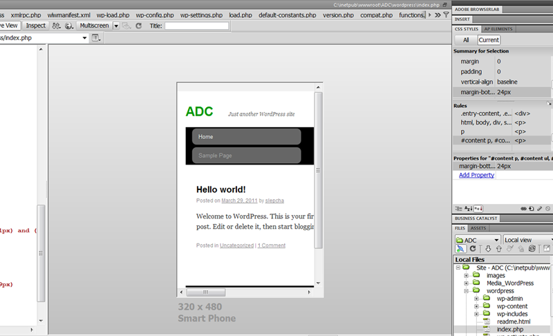
As you can see in the image above we have applied a phone theme for wordpress at a screenwidth of 320 px.
If you have read the Tutorial on Editing wordpress themes using Dreamweaver CS5 by Brian Wood we know that a simple WordPress web page is made up of three basic sections: a header, the content, and a footer.The header section contains links to style sheets, JavaScript. The header section is named as header.php, this file is inside the "theme name" folder.This is where we will need to add media query css links.
e.g -
<!-- Phone -->
<link href="phone.css" rel="stylesheet" type="text/css" media="only screen and (max-width:320px)" />
<!-- Tablet -->
<link href="tablet.css" rel="stylesheet" type="text/css" media="only screen and (min-width:321px) and (max-width:768px)" />
<!-- Desktop -->
<link href="desktop.css" rel="stylesheet" type="text/css" media="only screen and (min-width:769px)" />
Make a copy of Style.css
We will use twentyten theme for this section of the tutorial.Open style.css from wp-content/themes/twentyten.
Save as style_phone.css and style_tablet.css. We will use these three stylesheet for Phone,tablet and desktop.The default style.css will be for desktop.
Header.php
Open header.php from wp-content/themes/twentyten.
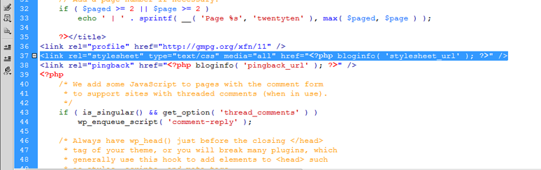
Notice that the href for the stylesheet is using the bloginfo function, this function displays information about the blog and can be used anywhere within a page template. The bloginfo('stylesheet_url') outputs http://example/home/wp/wp-content/themes/themename/style.css.
Make sure you have set up Site specific code hints by going to Site > Site-Specific Code Hints.For more information on Site-Specific Code Hints go to
http://www.adobe.com/devnet/dreamweaver/articles/dw_wordpress_pt2.html.
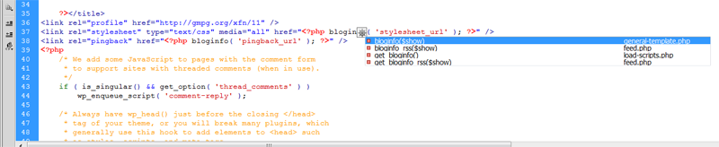
Take the cursor in front of bloginfo and press Ctrl + Spacebar you will see that bloginfo is defined in general-template.php.This is located in wp-includes/general-template.php.
general-template.php and theme.php
Open general-template.php from wp-includes.
The output for bloginfo is using the get_bloginfo output, and the stylesheet_url is defined using get_stylesheet_uri() which is defined in theme.php.
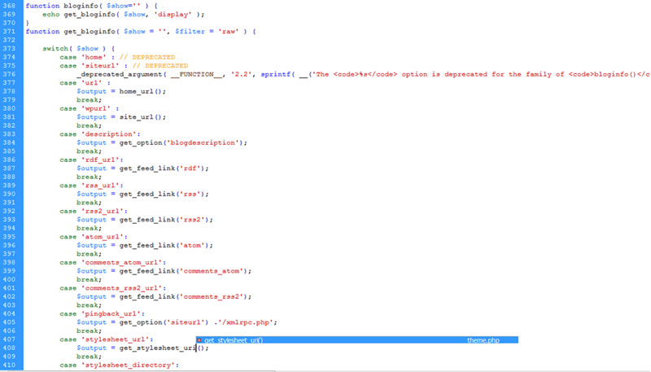
Open theme.php from wp-includes and copy paste the get_stylesheet_uri() function twice.Change the name of the function to get_stylesheet_uri_phone() and the css to style_phone.css so
that it points to the style_phone.css which we created in the beginning. Follow the same steps for tablet. See image below.
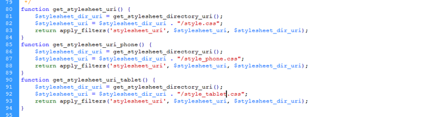
In general-template.php we need to add these new functions so that the output can be used. Add a case for phone and tablet.See image below.
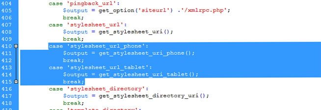
The last step now is to add the links for the phone and tablet css in header.php. Paste the following code to the head section of header.php also replacing the existing link tag.
<link rel="stylesheet" type="text/css" media="only screen and (min-width:769px)" href="<?php bloginfo( 'stylesheet_url' ); ?>"/>
<link rel="stylesheet" type="text/css" media="only screen and (max-width:320px)" href="<?php bloginfo('stylesheet_url_phone' ); ?>"/>
<link rel="stylesheet" type="text/css" media="only screen and (min-width:321px) and (max-width:768px)" href="<?php bloginfo('stylesheet_url_tablet' ); ?>"/>
Notice that i have added the media queries for each screen width and the location of the css is also handled by new parameters which we added in general-template.php.
Editing Styles using Resolution management and CSS styles panel
The resolution management feature is new to CS 5.5 and aims to give the user control on how to display a page with different resolutions / view-port sizes in Live-/Design View based on specified media queries.This helps the user to check the style sheets for each applicable media query.
The Multiscreen button has now a drop down menu :
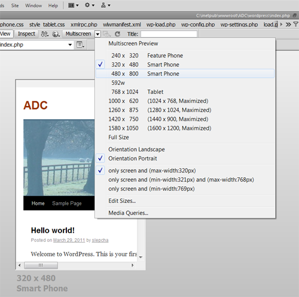
We are going to start editing the css for phone ,select smart phone from the drop down and Bring up the css styles panel.
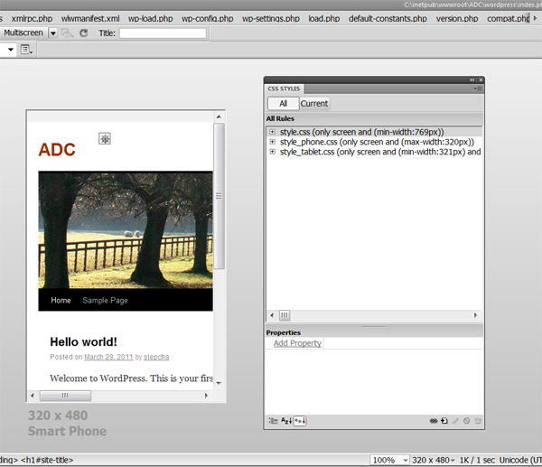
Dreamweaver has picked up all the 3 files which are applied to this wordpress theme.We will now start using the inspect feature to make changes to the
style_phone.css. Click on inspect so that we can start inspecting styles using the current tab in the css styles panel along with live code.
In the image below i have selected the #wrapper id which is the container div for the twentyten theme. I have added a width of 320 px to this container div to customize the wordpress site for a phone screenwidth. We need not worry about which css file we are editing as Dreamweaver displays only the css in the current context of the screenwidth. It will only show rules which have been defined in the style_phone.css.
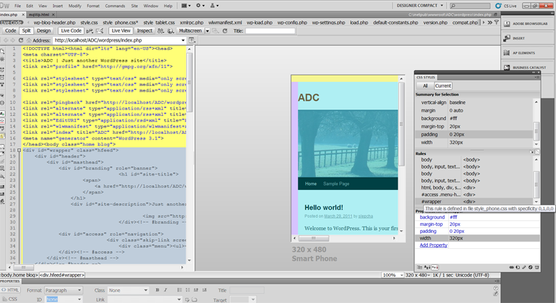
Next the #site-title has a width of 700px we will change that to 100px so that it is displayed within the wrapper div which is of 320px. We will also make
the #site-description float left so that it is next to the site title.
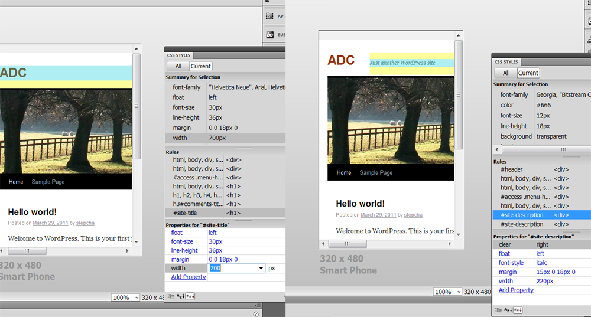
We will remove the image for our phone version.The header image is inside the #branding div, we will change its display from block to display none.
The navigation bar is the #access div we have updated the width for it to be 270px, added some border radius to it. Please see the image below.
Till now we havent touched any code, all the changes have been made using Dreamweaver's inspect and css styles panel.
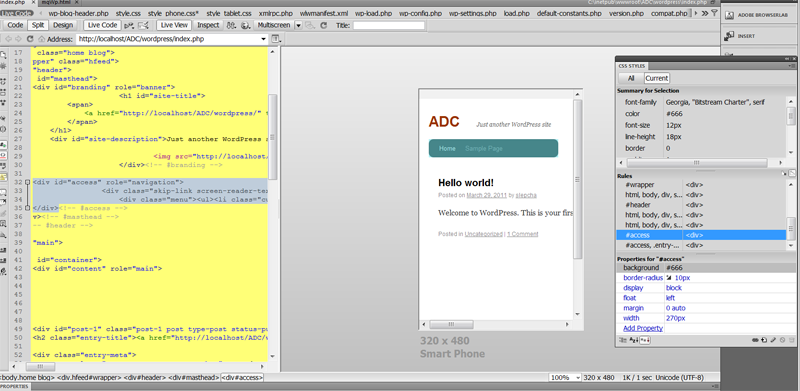
Next I have made changes to the menu class so that the links are vertical and basically reduced the size of the #main id which contains the post. Also changed the width of the footer items.
The updated twentyten for a phone screenwidth is in the source files available along with this tutorial.
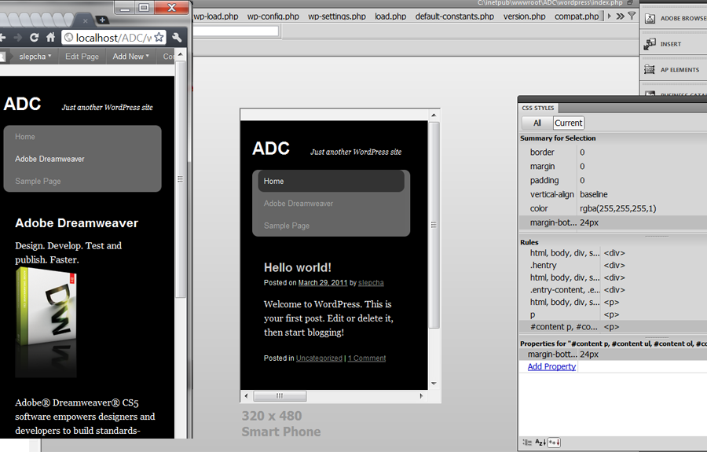
As you can see using Dreamweaver we can easily modify our existing theme to use media queries and create a wordpress site which is optimized for various screenwidths.